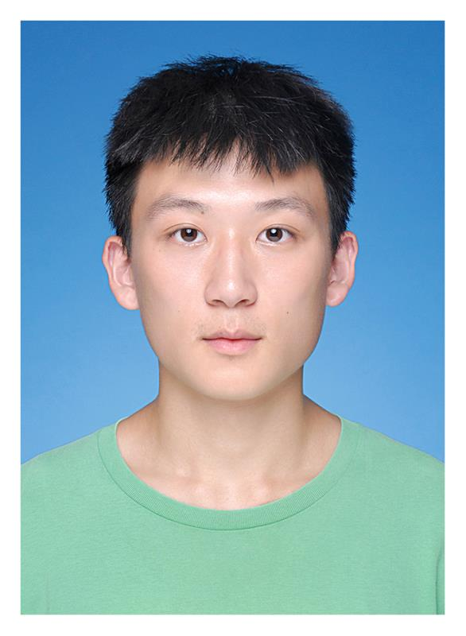

This is Zhihao Ma
Hello! My name is Zhihao Ma, a student in University of York, doing Master of Engineering(MEng) in Electronic Engineering, and I expect to graduate in July 2025.
I'm looking for a PhD position in 2025! My research interest is using Centre Pattern Generators (CPGs) to build a better control framework, but I'm open to any other possibilities.
Check out my CV : here
Timeline: Jun 2023 – Sep 2023
Check out my poster: here
Check out my report: here
Timeline: Jun 2024 – now
This project is for one of Dr. Mark Post's PhD students, Yunlong Lian. My contributions include developing an algorithm to help the quadruped robot stand up, assisting Yunlong in writing code to use CPGs to control all the motors, and creating algorithms to enable the robot to walk and run.
If you would like to discuss potential PhD opportunities or have any other questions, please feel free to reach out to me at:
Email: zm926@york.ac.uk
LinkedIn: LinkedIn Profile